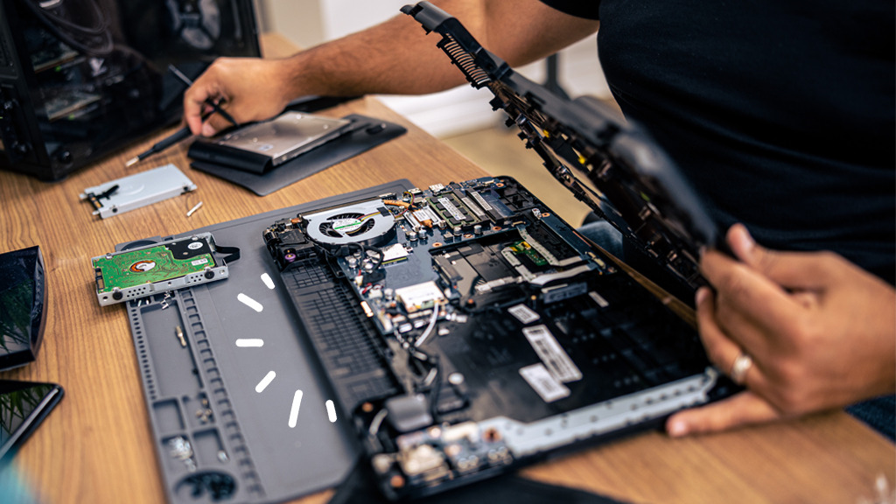
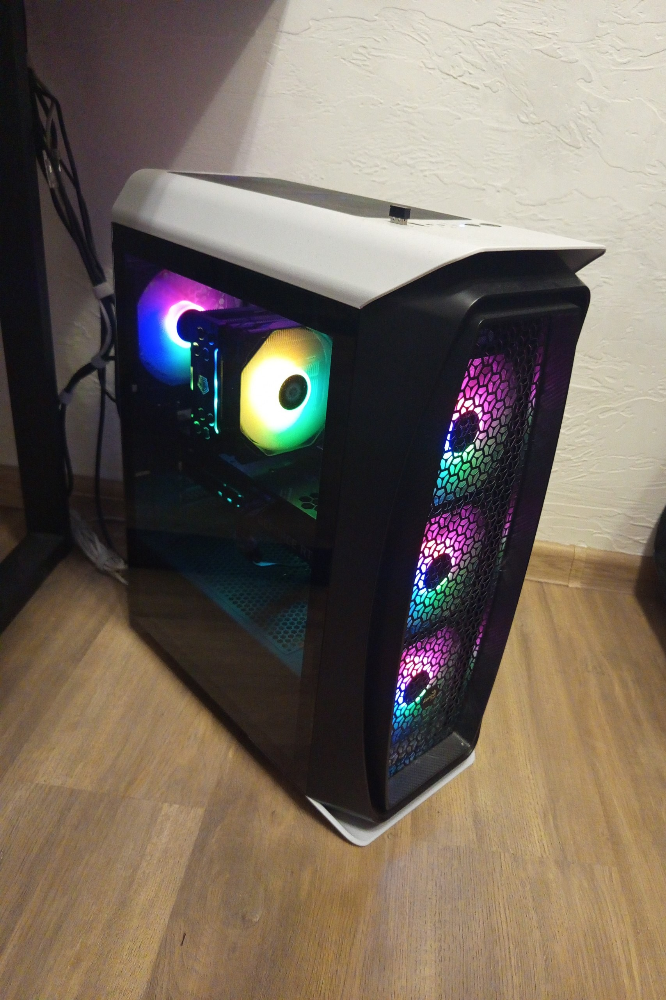
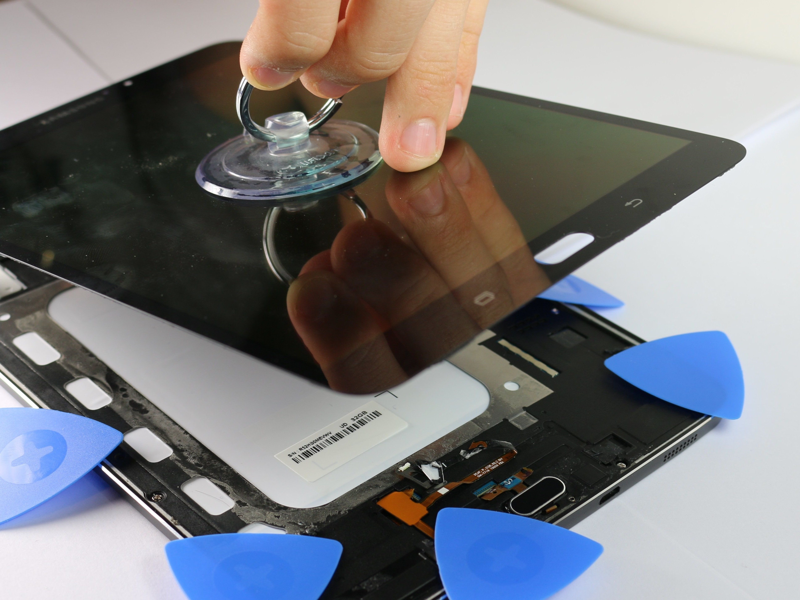

Наши работы
Примеры выполненных ремонтов и собранных компьютеров




Мы специализируемся на быстром и качественном ремонте смартфонов, ноутбуков и другой электроники. Работаем даже тогда, когда другие уже закрылись.
TechCare — это команда опытных инженеров и техников с более чем 10-летним опытом работы в сфере ремонта и обслуживания электроники. Мы начали как небольшая мастерская в гараже, а сегодня являемся одним из ведущих сервисных центров в Санкт-Петербурге.
Наша специализация — это не только ремонт поврежденных устройств, но и сборка индивидуальных решений под ваши задачи. Мы верим, что каждый клиент заслуживает персонализированного подхода и прозрачного ценообразования.
Все наши работы выполняются с использованием оригинальных комплектующих и профессионального оборудования, что позволяет гарантировать качество и долговечность ремонта.
Предлагаем комплексные решения для ремонта различной техники с гарантией до 12 месяцев
Замена экранов, батарей, ремонт портов и разъемов, восстановление после попадания жидкости. Работаем с iPhone, Samsung, Xiaomi и другими брендами.
Диагностика и ремонт материнских плат, замена термопасты, ремонт клавиатур и тачпадов, замена дисплеев, восстановление после механических повреждений.
Восстановление планшетов, игровых приставок, наушников и другой портативной электроники. Специализируемся на сложных случаях, которые отказываются делать другие.
Профессиональная сборка компьютеров под любые задачи: от офисных ПК до мощных игровых и рабочих станций для дизайна и видеомонтажа. Индивидуальный подбор комплектующих и оптимизация бюджета.
Наша команда специализируется не только на ремонте техники, но и на профессиональной сборке компьютеров под ваши конкретные задачи. Мы подберем оптимальные комплектующие, соберем систему и настроим программное обеспечение.
Заказать сборкуСоздаем мощные игровые системы с последними поколениями видеокарт и процессоров для максимальной производительности в современных играх.
Собираем надежные рабочие станции для дизайнеров, программистов, видеомонтажеров с оптимальными конфигурациями под профессиональные задачи.
Модернизируем существующие компьютеры: добавляем оперативную память, устанавливаем SSD, обновляем видеокарты и процессоры для увеличения производительности.
Примеры выполненных ремонтов и собранных компьютеров
Оставьте заявку и мы ответим вам в течение 15 минут
Пн-Сб: 10:00 - 22:00, Вс: 12:00 - 20:00